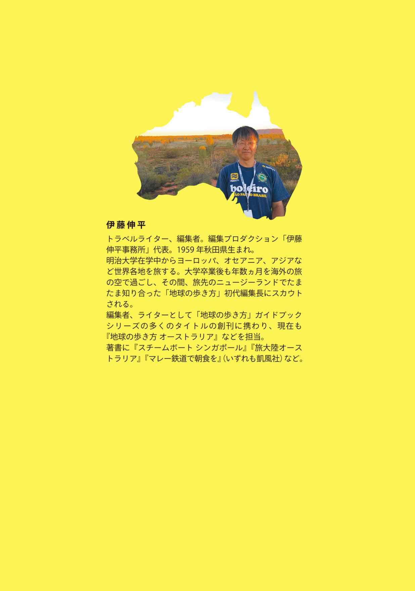
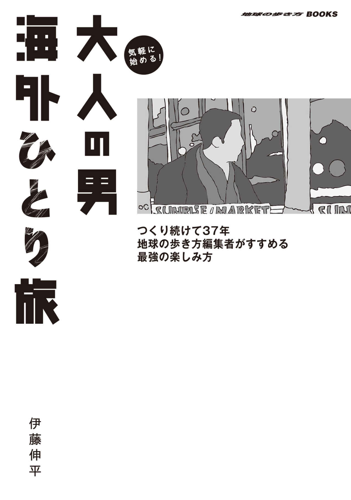
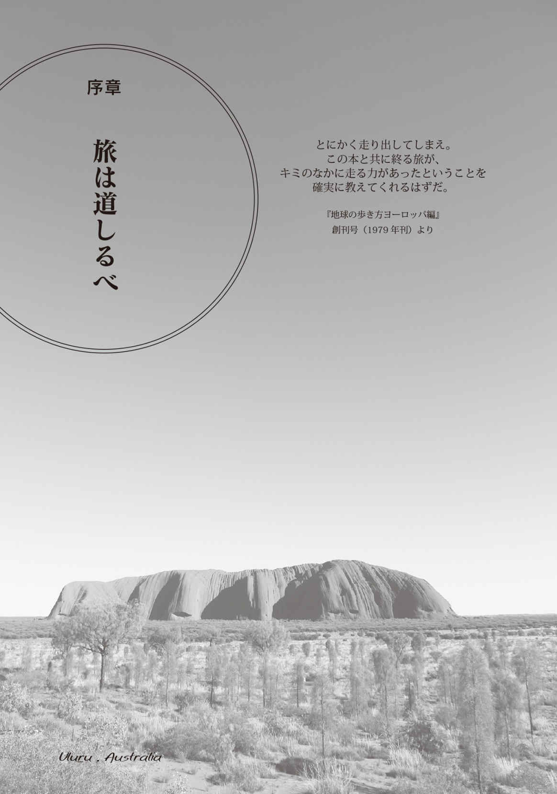

| 気軽に始める！ 大人の男海外ひとり旅 つくり続けて37年 地球の歩き方編集者がすすめる最強の楽しみ方【見本】 (地球の歩き方BOOKS) | |
| 伊藤 伸平 | |
| 株式会社ダイヤモンド・ビッグ社 (2019) | |


この本は縦書きでレイアウトされています。
また、ご覧になる機種により、表示の差が認められることがあります。
本作品を電子書籍版に収録するにあたり、一部の漢字が簡略体で表記されている場合があります。
目次
海外男旅のすすめ
旅立つきっかけは何だっていい
旅は非日常。刺激に溢れている
短い旅にはテクニックが必要だ
海外ひとり旅の魅力
旅は道しるべ
ＰＡＲＴ１ あれこれ考えずに旅に出る
Ｑ・旅先で何をしたらいいか分からないけれど大丈夫？
Ｑ・大人の男ひとり旅におすすめの旅の行き先とスタイルは？（初めて編）
Ｑ・大人の男ひとり旅におすすめの旅の行き先とスタイルは？（２度目以降編）
Ｑ・旅のスケジュールの作り方は？
Ｑ・英語力はどの程度必要？
Ｑ・英語も通じない国、どうする？
Ｑ・機械翻訳機は役に立つか？
ＰＡＲＴ２ 旅の情報収集・手配を楽しむ
Ｑ・旅の情報収集、手配に必要な日数は？
Ｑ・旅の情報探しはどうする？
Ｑ・インターネットで旅情報を効率よく得るには？
Ｑ・飛行機の手配の仕方は？
Ｑ・スカイスキャナー、カヤックを利用するときの注意点は？
Ｑ・乗り継ぎ時間の候補がいろいろある場合はどのフライトを選ぶ？
Ｑ・ＬＣＣの上手な使い方は？
Ｑ・ＬＣＣ、フルサービスキャリア、どっちがお得？
Ｑ・航空会社のマイレージプログラムには加盟した方がいい？
Ｑ・ホテルの予約は必要か？
Ｑ・ホテル選びのポイントは？
Ｑ・クラブルーム宿泊ってお得？
Ｑ・大手ホテルの会員特典は？
Ｑ・ホテル予約サイトはポイントサイトを経由するとお得って本当？
Ｑ・現地発着ツアーを予約する方法は？
ＰＡＲＴ３ 旅先のインターネット環境を手に入れる
Ｑ・そもそも旅先でインターネットは必要なの？
Ｑ・現地でインターネット環境を手に入れるには？
Ｑ・海外旅行におすすめのスマートフォンは？
Ｑ・現地プリペイドＳＩＭを手に入れるのは簡単か？
Ｑ・プリペイドＳＩＭ利用時のスマートフォンの設定は難しくないの？
Ｑ・中国では使えるインターネットサービスが限定されるって本当？
ＰＡＲＴ４ 旅支度を整える
Ｑ・現地でのお得なお金の使い方は？
Ｑ・現地通貨をお得に手に入れるには？
Ｑ・デビットカードや海外プリペイドカードはお得なの？
Ｑ・海外旅行保険は必要？
Ｑ・旅のバッグはどんなふうに選ぶ？
Ｑ・旅の荷物をどのくらい持っていくのがいい？
Ｑ・町歩きや観光時におすすめのバッグは？
Ｑ・貴重品の持ち方は？
Ｑ・旅の思い出を残すカメラは何を選ぶ？
Ｑ・旅の服装や靴はどうする？
ＰＡＲＴ５ 旅のトラブルを知る
Ｑ・旅先で体調を崩したら？
Ｑ・旅先で盗難に遭ったらどうする？
Ｑ・パスポートを無くしたらどうする？
Ｑ・ロストバゲージって本当にあるの？
Ｑ・緊急に現金が必要なとき日本から現金を安く送金してもらう方法は？
Ｑ・旅のトラブル体験は？
ＰＡＲＴ６ 旅をもっと楽しむアイデア
Ｑ・時差ボケ対策はどうする？
Ｑ・空港へは出発何時間前到着がベスト？
Ｑ・機内で快適に過ごす方法ってある？
Ｑ・飛行機の乗り継ぎがうまくいくか心配？
Ｑ・初めての空港でまごつかないか心配？
Ｑ・初めての町でまず何をする？
Ｑ・美味しいレストランはどうやって探す？
Ｑ・トリップアドバイザーの評価は当てになるの？
Ｑ・ひとり旅の食事を楽しくする方法は？
Ｑ・チップの額が妥当かどうか分からない？
Ｑ・分かりにくい場所のホテルを予約。迷わないでたどり着く方法は？
Ｑ・ホテルで楽しく過ごす方法は？
Ｑ・お土産はどこで買う？
Ｑ・免税ショッピングの注意点は？
Ｑ・タックスフリーの免税手続きの注意点は？
Ｑ・旅に持って行ってよかったものは？
Ｑ・町での移動手段は何を選ぶ？
Ｑ・タクシーで遠回りさせない方法は？
Ｑ・現地での長距離移動手段の事前予約は必要か？
Ｑ・海外でのレンタカーの注意点は？
Ｑ・旅の思い出写真を上手に撮るには？
エピローグ 旅中毒になる
旅の余韻から次の旅へ
行ってみたい旅のリストが増えていく
「旅中毒」になることを楽しむ
おわりに
※本書のデータは、本文に表記のない限り２０１８年10 月現在のものです。情報を活用してご旅行する場合は、ご自身で最新の情報をチェックしてください。

海外男旅のすすめ
僕はかれこれ35 年以上、海外旅行ガイドブック『地球の歩き方』の編集・執筆に関わってきた。旅の話や海外情報の記事の執筆もしている。そのためだろうか、旅の手配や現地での過ごし方など、何かうまいやり方を知っているのではないかと相談されることもある。しかし、インターネットでさまざまな情報が得られ、旅に必要な手配ができるようになった現在、僕も日々研究しながら、便利でお得な旅の手配の方法を探しているのが実情だ。
本書は、ガイドブック編集者の視点から、実際にどのような方法で旅のプランを考え、手配をし、旅をしているのかをＱ＆Ａ形式でまとめたものだ。僕の体験から出た話なので、旅のスタイルとしては、おもに僕と同世代、つまり50 代、60 代の男性向けになっている。
僕の学生時代──１９８０年代は、海外旅行をする若者が飛躍的に増加した時代で、世界のあちらこちらに日本人バックパッカーの姿があった。僕もそのひとりだった。決して裕福な旅ではなかった（むしろビンボー旅行と言っていい）。それでも、本や映像では知ることができない旅先の空気感、匂い、音、人との出会いなど、たくさんの刺激を受けてきた。僕と同世代には、年齢を重ねた今、心のどこかに《あの頃のような旅をもう一度してみたい！》《あの頃は知識もお金も余裕がなかったからできなかったけれど、今、行くのなら○○したい！》そんな思いをもっている人もきっといるはず。また旅をしなかった人、あるいは経済的状況でできなかった人でも、本、音楽、映画などにインスパイアされて、やってみたいと夢見た海外体験もあったはず。
今は学生時代より知識が増えたし、経済的に豊かにもなったが、学生時代のように何ヵ月も旅をする時間が簡単に取れるわけではない。現実には、１～２週間の旅になるだろう。でも、だからこそ便利になった旅のテクニックを駆使し、旅の準備を整えたい。
見たいもの、体験したいことは、まだまだいっぱいある。好奇心は旺盛だ。旅に出さえすれば、感じることも多い──それこそが旅の本質だ。そんな思いをもつ僕と同世代の旅人に......旅空の下たくさん出会えたらいいなと思う。
旅立つきっかけは何だっていい
「どこかへ旅に出る」ということは、その場所に対して何かしらの知識があるということ。人は情報がないことに対しては興味を抱くことはない。ただし、目的地の歴史や文化、風俗などといった知識、情報だけが旅のきっかけとは限らない。例えば、たった一枚の写真。それを見ただけで、旅に出たいという衝動に駆られることもある。
僕は今、『地球の歩き方』ガイドブックで、オーストラリアを中心に編集や執筆をしている。今から35 年以上も前、初めてオーストラリアへ行こうと思ったきっかけは、ウルル（エアーズロック）の一枚の写真を見たことだった。オーストラリアという国に興味があったわけでも、特別な知識があったわけでもない。当時は、コアラやカンガルーも好きというわけではなかった（今はオーストラリアの生き物に対して強い思い入れがある）。夕日に赤く染まる巨大な一枚岩の写真を見て、その場所に身を置いてみたくなっただけなのだ。
つまり旅に出るきっかけなんて、何でもいい。一枚の写真、一枚の絵、一篇の詩、歌に出てくる名称、テレビや映画でほんの少しだけ流れた映像、人から聞いた話......心のどこかに引っかかる何か、それが情報となり、旅へのいざないとなる。そして、 旅に出たいという気持ちになったら、旅に出ることを決めてしまうのだ。
もちろん旅をするためには、まとまった休暇もいるし、お金も必要だ。幸い大人の男にとって、少しばかり自由になるお金はあるはず。その範囲内で、「旅に出たい」という欲求のきっかけとなったことを実現する時期と方法を考えるといい。「旅に出る」ことを躊躇するのではなく、「旅に出る」と決めてしまう。その最初の一歩が大事なのだ。
旅は非日常。刺激に溢れている
仕事であれ、プライベートであれ、旅は僕にいつも大きな刺激を与えてくれる。
デスクのＰＣ画面をいやというほど眺め仕事に追われている日常から、少しの期間かもしれないけれども離れられる。旅は非日常の世界だ。
現地の空港へ降り立つと、周りから聞こえてくる言葉が変わる。人々の様子も日本にいるときとは違う。そして空港から一歩外へ出たときに感じる空気や匂い、そして光。旅先で見るさまざまな光景、出会う人との会話、口にする食事。その一つひとつが鮮明な記憶として残っている。日常生活では、数日前に食べた食事のことすら忘れてしまうことがあるというのに、旅の間の記憶は、一コマ一コマが鮮やかなのだ。旅をしている時間、それはきっとストレスフルなもので、身体にも心にもいいプラスの刺激の連続なんだと思う。
また海外の旅は、異国であり、異文化、別の価値観の場所であるからこそ、日本では気づかなかったことを吸収できるチャンスにも溢れている。人々のライフスタイルであったり、時間の使い方であったり。売られている物ひとつとっても、日本にはないような物があったり、センスの違う物であったり。自然景観の保護の仕方、自然の中での遊びにしても国や国民性で違っている。テレビや雑誌などメディアを通しては知ることができない、発見や驚きに満ちている。それが、自分自身の今後の生き方のヒントになることだってあるかもしれない。また自分の仕事のアイデアになることだってあるかもしれない。
帰国後、
「こんなことをしてみよう」
そう思い立つきっかけに、海外への旅はなり得る。
短い旅にはテクニックが必要だ
旅立つことを決めた。期間は、１週間から、せいぜい２週間としよう。
世の中には半年、１年あるいはそれ以上という長い旅をしている人も大勢いる。でも、現実的に、そんなに長い旅をすることができるのは、時間が自由になる職業に就いている人や、一度すっぱり仕事を辞めて旅に出ている人たち。実は時間がたっぷりある旅であればあるほど、旅を組み立てるためのテクニックはあまり必要がない。有り余る時間の中でじっくり腰を据えて、さまざまなことに取り組めるし、旅の間に出会う人から自分が必要とする情報も得られるからだ。
一方、滞在期間があまり長くない旅の場合は、旅を組み立てるためのテクニックをもっていた方がいい。旅に出たあとで、現地で情報をじっくり仕入れたり、手続きをしていたりすると、それだけで、実際に旅を楽しむ時間がどんどん減ってきてしまうのだから。もちろん、旅の間に得た情報で、現地での旅をいろいろ変えていくのも旅の醍醐味。ただ、旅をするきっかけとなったことをするということに関しては、日本出発前にある程度、実現できるようにしておいた方がいいのだ。そのために必要な最低限の旅のテクニック（それは時代とともに変わるものだけれども......）は身につけておきたい。
海外ひとり旅の魅力
旅にはいろいろなタイプがある。僕もひとり旅、家族旅行、妻と行く旅、オヤジ仲間と出かける旅など、いろいろな旅をしてきた。どんな旅でも楽しい。だから、ひとり旅が不安なら、誰かと一緒に旅に出るのだっていい。子育てが一段落しているなら夫婦で新婚旅行で出かけた場所を再訪してみる、ドライブ好きのオヤジ仲間と一緒にキャンピングカーを借りて旅をする......誰かと出かける旅で、旅の魅力をまず再実感してみることだ。
その上でひとり旅。
ひとり旅の最大の魅力は、旅の間のすべての行動が自分自身の判断でできるということだ。気持ちのいいホテルに泊まることができたら、一日中ホテルにいて景色を眺めながら過ごしてもいい。美術に興味があったら、同じ美術館に滞在中毎日通ってもいい。旅の間は、自由なのだ。自由であると言うことは、逆に言えばすべての行動の責任は自分にあると言うこと。買い物でぼられるくらいは何ということもないが、例えば自分の不注意から荷物の盗難などに遭っても、その対処は自分でしなくてはいけない。人は不思議なもので、頼る人がいないときは、自分の知恵を総動員してでも、何とかトラブルを解決しようとするもの。英語ができない、と思っていても、そんなときは何とか話そうとする。
そして気づく。
「俺、こんなこともできるんだ」
と。自分ができること、その可能性について、ひとり旅は気づきを与えてもくれる。
ひとり旅にはない、誰かと出かける旅の魅力ももちろんある。その最たるものは、旅の間の感動や喜びを一緒に行った仲間と共有できる楽しさ、ではないだろうか。
レストランで「これ初めての味。美味しいよね」と、ひとりでしゃべっても誰も反応してくれない寂しさ。砂漠に沈む夕陽を眺めても感動を分かち合う相手がいないむなしさ。列車での長距離移動中、ひとり車窓を何時間も眺めるしかないときの気持ち。でも、こうした思いをじっくり自分自身でかみしめてみることは、悪いことばかりではない。その時そのときの旅の一シーンが、本当に鮮明に記憶として残るし、誰とも会話のない時間は、いろいろな物事についてじっくり考える機会ともなるからだ。
ひとり旅だと、旅人同士の交流が増える、ということがある。ひとり旅を続けているうちに、やはり心のどこかで話し相手が欲しくなるのかもしれない。不思議とひとり旅の相手と声を掛け合うことが多くなるのだ。何人かが語り合っている様子を見ると、話しかけるのは躊躇するが、相手がひとりだと、何となく気軽に声をかけることができる。たぶん、逆もそうだと思う。だからひとり旅のときは、ひとり旅の仲間ができやすい。旅仲間同士の話は、いろいろ刺激になることも多く、次の旅へのモチベーションアップにもつながることがある。
男だから、ひとり旅がメリットになることも多い。
深夜まで現地のバーで飲んだくれても、ひとりでタクシーやウーバーなどを利用しても、レイプなどの被害に遭う心配をする必要はない。ちょっとアブなそうな場所でも、男なら好奇心で入ってみることもできる（あくまで自己責任で）。またイスラム圏の国へ行っても、女性は服装の規制があっても、男性は暑ければ半袖で過ごせる。
ジェンダーフリーが進む現代でも、海外へ出てみれば、場所によって男女の性差による旅のしやすさの違いを感じることはある。男は、女性に比べると未だに比較的、自由度が高いのだ。
旅は道しるべ
以前、葉加瀬太郎さんのラジオ番組に出させていただいたことがある。その番組の最後に
「伊藤さんにとっての旅とは何ですか？」
という質問があった。それまであった旅のさまざまなシーンを思い出し、少し間を置いて僕が出した答え。
「旅は人生の道しるべだと思います」
旅は余暇の過ごし方のひとつかもしれない。しかし、その間に起こった出来事や出会った人に影響されたことなど、旅にはたくさんのエピソードが詰まっている。
僕がオーストラリアへの旅に出るきっかけは先に書いたが、そのときに
「せっかくオーストラリアまで来ているんだから、隣の国も見ておこう」
という軽い気持ちで出かけたニュージーランドで、今の仕事につながる出会いがあった。
まだ学生だった僕は、当然ビンボー旅行者だった。クライストチャーチの大聖堂前のベンチに座り、
「今日は天気もいい。どの公園のベンチを今晩の野宿の場所にしようかな？」
そんなことをぼんやり考えていた。そんな僕に中年のチョビ髭を生やした少しばかり怪しげなオヤジから声がかかった。
「ひとりで旅行しているの？」
そのオヤジは、実は当時の『地球の歩き方』編集長だった。彼に聞かれるがままに、僕が旅したオーストラリア、ニュージーランドの話をしたら
「実は今度、『地球の歩き方』ガイドブックの４冊目として、オーストラリア＆ニュージーランド編を作るんだ。少し手伝ってもらえるとうれしいなぁ」
こう言われたのだ。
その夜はパブでビールとパブ飯をご馳走になり、野宿の予定のベンチが、彼の泊まっていたホテルの部屋の床に変わった。そして翌朝、僕が予約してあった列車に乗るためホテルを出発するときに、旅の軍資金の足しにと１万円を渡されたのだ。
ビンボー学生旅行者にとって、１万円はかなりの額だった。その恩義に応えなければと、帰国後、『地球の歩き方』編集室を訪ね、ガイドブック編集の手伝いを始めたことが、現在へとつながっている。一枚の写真をきっかけにオーストラリアへ出かけていなければ、そして軽い気持ちで「隣の国も見てみよう」と思わなければ、僕はガイドブックの編集に携わることもなかったかもしれないし、今、こうしてこの本を書いていることもなかったかもしれない。
このときに限らず、僕は人生のいくつかの節目で、旅に出たことによって、そのあとに歩みを決めたことが何度かあった。旅が〈人生の道しるべ〉というのは少し大げさかもしれないが、旅に出ることで受ける刺激や出会いから、次の生き方のヒントになることが得られることもあると思っている。
本電子書籍は２０１９年１月23 日にダイヤモンド・ビッグ社より発行された『気軽に始める！ 大人の男海外ひとり旅 つくり続けて37 年 地球の歩き方編集者がすすめる最強の楽しみ方』（初版）を、一部加筆、修正の上、電子書籍化したものです。
［著者］
伊藤伸平（いとう しんぺい）
トラベルライター、編集者。編集プロダクション「伊藤伸平事務所」代表。１９５９年秋田県生まれ。
明治大学在学中からヨーロッパ、オセアニア、アジアなど世界各地を旅する。大学卒業後も年数ヵ月を海外の旅の空で過ごし、その間、旅先のニュージーランドでたまたま知り合った『地球の歩き方』初代編集長にスカウトされる。
編集者、ライターとして『地球の歩き方』ガイドブックシリーズの多くのタイトルの創刊に携わり、現在も『地球の歩き方オーストラリア』などを担当。著書に『スチームボート シンガポール』『旅大陸オーストラリア』『マレー鉄道で朝食を』（いずれも凱風社）など。
［見本］
気軽に始める！ 大人の男海外ひとり旅
つくり続けて37 年 地球の歩き方編集者がすすめる
最強の楽しみ方
２０１９年１月23 日 初版発行
２０１９年６月13 日 電子書籍版 発行
著者 伊藤伸平
発行所 株式会社ダイヤモンド・ビッグ社
〒１０４－００３２ 東京都中央区八丁堀２－９－１
編集部 ＴＥＬ ０３－３５５３－６６６７
http://www.arukikata.co.jp/
発売元 株式会社ダイヤモンド社
〒１５０－８４０９ 東京都渋谷区神宮前６－12 －17
販売 ＴＥＬ ０３－５７７８－７２４０
http://www.diamond.co.jp/
印刷・製本 開成堂印刷株式会社
表紙デザイン 日出嶋昭男
表紙 写真協力 © iStock
校正 有限会社トップキャット
編集 河村保之
© 2019 Shimpei ITO
※ご注意
本電子書籍の全部または一部を無断で複製（コピー）、転載、改ざん、公衆送信すること、および有償・無償にかかわらず本データを第三者に譲渡することを禁じます。
個人利用の目的以外での複製などの違法行為、もしくは第三者への譲渡をしますと著作権法、その他関連法によって処罰されます。